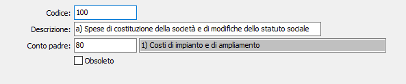

Piano dei conti Bilancio esterno
La procedura risponde alle esigenze di tutte le aziende che per ragioni di organizzazione interna hanno necessità di rielaborare il proprio bilancio secondo un formato diverso (ad esempio ViaLibera). L’azienda in questo caso inserisce in questa tabella il piano dei conti esterno. In manutenzione conti, clienti e fornitori è poi possibile associare il codice al piano dei conti esterno per poi poter estrarre le informazioni secondo lo schema di riclassificazione.

CODICE: codice alfanumerico di 10 caratteri che individua il conto. Il codice sarà utilizzato sul piano dei conti di OS1 per il collegamento con il sottoconto di OS1. Su questo campo sono attive le funzioni di ricerca (F9).
DESCRIZIONE CONTO: campo alfanumerico di 120 caratteri per descrivere il conto.
CODICE: codice alfanumerico di 10 caratteri che individua il conto di gruppo a cui appartiene il conto in oggetto. Su questo campo sono attive le funzioni di ricerca (F9).